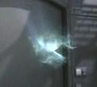
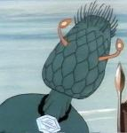
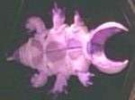

|
Incontrati dall'Enterprise
nel 2152, sono esseri
incorporei che possono trasmigrare da un corpo all'altro prendendone il
possesso. Dalle loro navi hanno la possibilità di disabilitare i sistemi dei
vascelli che vengono catturati. Vivono nel subspazio e viaggiano attraverso
esso. Non possono assumere il controllo dei
Denobulani, in quanto non sono compatibili con la loro fisiologia; anche
una buona capacità di controllo della mente, come quella
vulcaniana, può bloccare questi esseri. Gli
esseri sotto il loro controllo sono individuabili per un alto livello
di acetilcolina nel loro sistema nervoso automatico. In passato erano una
specie corporea che si è evoluta nella forma in cui si presentano
in questo episodio. |
The Crossing |
|
Specie
vegetale senziente, di dimensioni superiori a quelle umane, che abita un
pianeta ai confini del bordo esterno della galassia. Il grado tecnologico
appare superiore a quello della
Federazione, soprattutto in campo medico. |
The Infinite Vulcan |
| Parassita alieno che si posiziona nella nuca
dell'ospite umanoide, entrando dalla bocca. Prende il controllo
della vittima e sembra stimolarle le ghiandole surrenali,
procurando all'ospite una grande forza e resistenza fisica. La
personalità dell'ospite umanoide viene annullata e i ricordi della
vita precedente piano piano si affievoliscono. I parassiti
sembrano non poter vivere a lungo senza la creatura madre, cui
sono legati telepaticamente. Nel
2364 alcuni di questi parassiti
alieni cercano di prendere il controllo del quartier generale
della
Flotta Stellare. |
Conspiracy |
| Forma di vita batterica che vive nello spazio. Si
tratta di organismi subatomici in grado di raddoppiare il numero della
popolazione ogni 15 minuti e capaci di corrodere i legami nucleari del
tritanio. Nel
2365 una colonia di questi organismi apre una
piccola breccia sullo scafo della
Pagh e tenta di corrodere
anche lo scafo dell'Enterprise. Per rimuovere i batteri dallo
scafo delle navi viene usato un raggio incanalato di neutrini. |
A Matter of Honor |